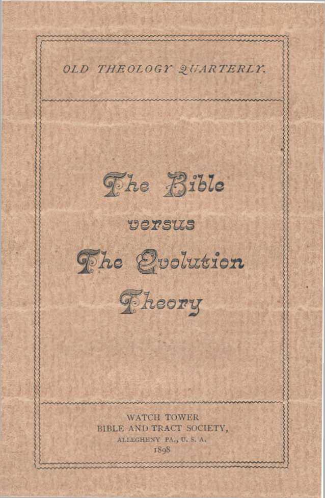
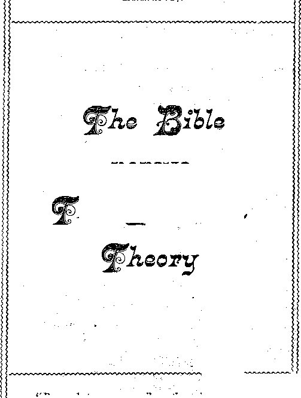

No. 43—The Bible Versus the Evolution Theory
No. 43.—OCTOBER, 1898.
ENTERED At THE POST OFFICE, ALLEGHENY, PA.
SAMPLE TRACTS FREE! SUBSCRIPTION PRICE, SIX CENTS PER YEAR—48 PAGES.
FOR THR
PROMOTION OF CHRISTIAN KNOWLEDGE.
!’UBT.:SHED BY THE
WRTCH TOWER BIBLE & TRACT SOC’Y
BIBLE HOUSE, ALLEGHENY, PA.
QUARTERLY, SIX GENTS A YEAR.
WO. T. THE WAGES OF SIN.
NO. 2. CALAMITIES—WHY GOD PERMITS
KO. 3. PROTESTANTS, AWAKE !
KO. 12. WHY EVIL WAS PERMITTED.
NO. 15. A REPLY TO ROBERT INGERSOLL. „
NO, 21. DO YOU KNOW?
NO. 22. THK WORLD’S HOPE.
NO. 27. A DARK CLOUD AND ITS SILVER LINING.
NO. 28. BRINGING BACK THK KING.
NO. 31. LETTER OF WITHDRAWAL.
NO. 37. HOW RRAOEST THOU ?
NO. 38. HOPE OF IMMORTALITY.
NO. 40. WHAT IS THE SOUL?
NO. 41. MUST WK ABANDON He'PR OF A GOLDEN AGE?
NO. 42. CROSSES TRUK AND FALSE.
Nos. x. 21,27 and 28 can be bad in Swedish.
Nos. x, 21 and 27 can be had in Dano-Norwegian.
Nos. x, 3, xi, 12, 2t, 22, 28 and 38 can be had in German.
Nos. 21 and 22 can be had in French.
No. 1 can be had in Hollaudish.
Extra copies of the above trads will be supplied free, on application, to subscribers ; or a single sample to any one. Thus many may be coworkers with us and with God ir. scattering the truth—••‘the hail.”—Isa. 28:17. Hundreds of thousands* are being circulated thus, the funds being supplied by voluntary contributions from those whose hearts and heads have been refreshed by these “glad tidings of great joy which shall be unto all people.”
SPECIAL ISSUES.
No. r r. Tabernacle Shadows of Better St orifices, Illustrated, 104 pp No. 16. “ Thy li’ord is 7 ruth.” 44 pages.
No. 32. 11'hat Soy the Scriptures About Hell ? 80 pp.
No. 39. What Say the Scriptures About Spiritism / 100 pages.
Extra Copies of these special Issues are supplied to all regular subscribers at ten cents each, or 50 cents |>er dozen.
yVe. 43. The Biblevs, the Evo’ution Theory. 43 pp., 23c per dot.
“ The wisdom of their wise men shall perish, and the understanding of their prudent men shall be hidden.
------Isaiah 29: If;
“Beware lest any man spoil you throughphilosophy.” The Scriptures are able to make thee wise unto salvation.”
----Col. 2:8; 2 Tim. 3:15.—
No. 43.—OCTOBER, i$98.
ENTERED AT THE POST OFFICE, ALLEGHENY, PA.
SAMPLE TRACTS FREE! SUBSCRIPTION PRICE, SIX CENTS PER YEAR—48 PAGES.
FOR THE
PROMOTION OF CHRISTIAN KNOWLEDGE
PUBLISHED BY THE
BIBLE HOUSE, ALLEGHENY, PA.
QUARTERLY, SIX CENTS A YEAR.
NO. X. THE WAGES OF SIN. '
NO. «. CALAMITIES—WHY GOD PERMITS THEM.
NO. 3. PROTESTANTS, AWAKE!
NO. 12. WHY EVIL WAS PERMITTED. .
NO. X$. A REPLY TO ROBERT INGERSOLL.
NO. 21. DO YOU KNOW?
NO. 32. THE WORLD’S HOPE.
NO. 27. A DARK CLOUD AND ITS SILVER LINING.
NO. 28. BRINGING BACK TRE KING.
NO. 31. LETTER OF WITHDRAWAL.
NO. 37. HOW^READESTTHOU ?
NO. 38. HOPE OF IMMORTALITY.
NO. 46. WHAT IS THE SOUL?
NO. 41. MUST WE ABANDON HOPE OF A GOLDEN AGE?
NO. 42. CROSSES TRUE AND FALSE.
Nos. x, 21,27 and 28 can be had in Swedish.
Nos. x, 2x and 27 can be had in Dano-Norwegian.
Nos. 1, 3,11,12, 21, 22, 28 and 38 can be had in German.
Nos. 21 and 22 can he had in French.
No. 1 can be had in Hollandish.
Extra copies of the above tra&s will be supplied free, on application^ to subscribers; or a single sample to any one. Thus many may be coworkers with us and with God in scattering the truth—“the hail.”—Isa, 28:17. Hundreds of thousands are being circulated thus, the funds being supplied by voluntary contributions from those whose hearts and heads have been refreshed by these “glad tidings of great joy which shall be unto all people.” ,
SPECIAL ISSUES.
No. n. Tabernacle Shadows of Better Sacrifices, Illustrated, i04yp
No. ib. “ Thy Word is Truth!' 44 pages.
No. ya. What Say the Scriptures About Hell I 80 pp.
No. pg. What Say the Scriptures About Spiritism t 106 pages.
Extra Copies of these special issues are supplied to all regular subscribers at ten cents each, or 50 cents per dozen.
No. 4g. The Bible vs. the Evolution Theory. 45 pp., a$c per dot.
A Live Tspie Discussed by Traveling‘f/Iinistet's.
THE BIBLE
VERSUS
Report of a friendly discussion, on board a crowded “Light* ning Express,” witnessing the fulfilling of Daniel 12:4.
Alpha. — Is this seat engaged ?
Betha. — No, it is ax your service, and I will be pleased to have company—sit down. You are a minister ?—Of what denomination, may I ask ?
A.—I am a Presbyterian minister, and now en route to a meeting of the synod of which I am a member.
B.—Ah! this affords me a good opportunity to inquire how the Presbyterian ministry in this vicinity stands on the subject of Evolution. My observation leads me to believe that the Evolution theory, which I consider quite unscriptural, is becoming very popular in all denominations;—amongst the ministers as well as amongst their parishoners. I will be glad to know the attitude of the Presbyterians hereabouts. I know, of course, that Presbyterian dodlrinal standards, like the doctrinal standards of all orthodox
churches, uphold the Scriptural dodtrine that man was created perfedt and fell from his perfection into sin and degradation: and my question, therefore, in substance is,—Are Presbyterians in this vicinity holding to the Bible and to their creeds on this point, or are they abandoning both in favor of the speculations of Darwin, Huxley, et al ?
A.—Not being authorized, I cannot speak for my brethren of the Presbyterian ministry as a whole, but • I can speak for myself, and I assure you that I am a firm believer in Evolution: and I have every reason to believe that my views on the subjedt are in full accord with the sentiments of the best educated people in my own and other denominations.
B.—I concede the point that the tendency of education for the past twenty-five years has been in the diredtion of Evolution and against the Bible: I incline, however, to the opinion that the majority of the advocates of evolutionary theories are not aware of the violent and irreconcilable difference between these theories and the Bible. It appears to me that if it were generally known that if evolutionary theories are true, the Bible dodtrines are false, and that if the Bible is of God, his inspired Word, evolutionary theories are absolutely false, many Evolutionists would give thesubjedt deeper study before accepting and advocating a theory which gives the lie to the words of our Eord and of his Apostles and all the holy Prophets. -----
A.—Oh well, I do not go to the extreme of some Evolution theories—to claim that there was no divine interposition in the operation of Nature, no life-giving at the beginning: that inert matter became vitalized without supernatural aid I deny. Even Prof. Huxley
on this subject says,—' ‘At the present moment there is not the shadow of trustworthy, direct evidence that abiogenesis (life drived from the not living) does take place or has taken place within the period during which the existence of life on the globe is recorded.”
B.—Yes, surely there are very few that go to the extreme you mention. But I maintain that the entire philosophy of Evolution is opposed by the plainest statements both of the Old and New Testament Scriptures. (1) The extreme view, if it does not deny the existence of God, claims at least that he had nothing whatever to do with the creation of man; but that Evolutionary processes began with inert matter. (2) Also extreme hypothesis assumes that divine power did operate upon inert matter, but that it began at the very lowest point of living organism, and created a microbe, or more exactly speaking a “protoplasm" which became the parent of all living things, including man, by a supposed process of Evolution. (3) The most conservative theory of Evolution hesitates to go so far back as the “protoplasm," and ignoring the method by which divine power operated in the development of the lower animals, begins its philosophy with man: searching amongst the lower animals, for the one most nearly resembling humanity in structure and shape, it lights upon the monkey, the baboon and the chimpanzee, and asserts that human nature represents a second step in advance of these (for it is forced to admit many dissimilarities), and that “a missing link” is still being sought—a grade or condition of life between the highest monkey-developments and the lowest form of the human creature known.
Those who accept this last theory often strenuously object to tracing their genealogy back to a microbe, a “protoplasm,” but feel less hesitancy about thinking of Adam’s grandfather as a monkey, and Adam himself as but one remove from the monkey family, and himself the very lowest and most degraded of his own species. This last is the thought, I believe, that is the most prevalent throughout Christendom; and those who entertain it, while somewhat abashed at the humble origin which they attribute to our race, nevertheless pass over it lightly, to expatiate in glowing terms respecting the great progress that mankind has made, and especially on the high degree of development attained in this nineteenth century.
A.—Well, do you dispute the greater general intelligence of the masses to-day, as compared with the past? And if you do not dispute that, is it not an unanswerable argument in support of the Evolution theory ?
B.—Assuredly I do not dispute the fadt that We of to-day are enjoying a higher degree of general knowledge and civilization than has ever before been known to the world. But instead of accepting in explanation of present conditions a theory which makes void the Word of God, I accept the explanation of present conditions which the Bible presents,—stronger and sounder by far, and more reasonable every way, than the Evolution theory.
The Bible foretold the present conditions, and explained how they would come about , and how they are • to result, with a detail and an accuracy which evolutionary speculation knows nothing about. I call to your remembrance the revelations given to the Prophet Daniel, concerning the things to come to pass in the dosing epoch of the present age. I remind you of the Prophet’s deep interest in the stirring scenes of that vision, and how he prayed and fasted seven whole weeks, desiring to know of these things—the purposes of God: and how then an angel was sent to him who delivered the divine message, ‘ ‘ Go thy way, Daniel, for the declarations [of the vision] are closed up and sealed until the time of the end.” This “time of the end,” you will remember, is elsewhere in the Scriptures spoken of as “The day of His Preparation ’’—the day or period in which the Dord will be preparing the world for the new dispensation, the Millennial Age.
Perhaps you will recall also the testimony of the angel sent to Daniel respecting some of the peculiar characteristics of this “Day of Preparation” or “time of the End”—he said: “In the time of the end many shall run to and fro and knowledge shall be increased— and the wise shall understand, but none of the wicked shall understand.” (Dan. 12:4, 10.) This inspired statement, it seems to me, is most remarkably fulfilled before our eyes to-day, and not only proves that we are now living in this period, “The Time of the End,” the day of God’s Preparation, but also furnishes a much clearer and more satisfactory explanation of the present day enlightenment and progress than any Evolution theory extant. It begins by calling attention to what every one will concede is one of the most notable features of our time, differentiating it from all past time, viz., the fad that everybody travels. The whole world seems to be “running to and fro;” just as was revealed to the Prophet twenty-four hundred years ago. Here we are ourselves, at this very moment running at the rate of fifty miles an hour and the car crowded full: and we know that similar trains are rushing in every direction, similarly laden with people. We wonder why there should be so much “running to and fro,” and yet it is on the increase every year. And mark you, my friend, the railway, and the steamboat and the trolley car, which permit this running to and fro, belong to this century. Remember, again, that you and I have probably traveled over more miles of country within the last twenty-five years than did all our ancestors back to Adam, during that period of six thousand years.
Take the next feature of the Eord’s revelation to Daniel respecting the present time: '‘Knowledge shall be increased. ’ ’ I hold, in harmony with this Scriptural statement, that the present wonderful increase of knowledge is not the result of Evolution, but the result of divine interposition at the present time: that it is one of the features of this “Day of His Preparation” —making ready for the Millennial Kingdom. If the theory of Evolution were correct, this increase of knowledge should have been gradual, during the past, and not sudden, now, toward the close of six thousand years of man’s history—within the present century, and particularly within the past fifty years.
I call your attention also to the faCt that the increase of knowledge has accompanied and followed the running to and fro of the past sixty years. In his own due time it has pleased the Eord to draw to man’s at tention the powers of steam and eleClricity, and to quicken him with intelligence for the handling and harnessing of these to his service. (See Exod. 31:6; 36:1.) Pots had boiled and kettle-lids had rattled for centuries before the mind of Watt was led to reflection on the power of steam, and how it might be utilized in human affairs. Similarly simple were the first thoughts respecting contrivances for making use of steam power, and subsequently electrical power. But for those simple thoughts to which we believe divine providence led in God’s due time, these great faCtors in our nineteenth century awakening might have lain unnoticed for centuries to come, as they did for centuries in the past. But in his own due time God made these the bases, the starting points, for the fulfilment of the divine prediCtion— in the Time of the End many shall run to and fro, and knowledge shall be increased.”
As the discovery of the power of steam led to the construction of engines by which, on boats and cars, the people by running to and fro and commingling with each other gave fresh impulses to thought and aCtion, so also the same steam power was attached to printing presses; and as a result the world is flooded with literature in every language, and thus again the world’s thinkersand writers are brought in contact with the millions of its population, and increase of knowledge became unavoidable—as God foreknew. Electricity coming in assists in this commingling of mankind and their thoughts, throughout the world, by telegraph, telephone, etc. Very evidently the all-wise God, the Author of the Bible, which he caused to be written by his various instruments and agents, knew well what would be the result of letting in of the proper light at the proper moment, to cooperate with all the features of his great and wonderful plan of the ages.
Moreover, you will bear me witness that the stoutest Evolutionists stand somewhat in awe of what may t>^ the outcome of present conditions, viewed along the lines c* Evolution. They begin to fear that the increase of knowledge signifies eventually a danger of social wreck and possibly of ultimate anarchy, or, to avert this, a return to some degree of restraint of education or of liberties. They see that the increase of knowledge of our day permits a twelve-year-old child to have before him the accumulated knowledge of centuries, as well as of modem investigations and discoveries, gives him much more theoretical knowledge at his command than had his grandfather (mainly of his own personal experience) at seventy years of age. They see also that a century ago the educated were extremely few, whereas to-day knowledge is so increased that in civilized lands education is compulsory, and comparatively few are without its privileges and advantages. And yet they see, contrary to all their Evolutionary expectations, that these hitherto undreamed-of blessings and comforts of our day are not apparently favorable in the masses of the people to the cultivation of happiness and contentment. On the contrary, it is manifest that the more and the greater the blessings enjoyed, the more and the greater will generally be the discontent in unregenerate hearts. Thus Evolutionists stand in dread of a retrograde movement, the logic of which disputes their hypothesis.
On the contrary, all of these fads are in most absolute accord with the Scriptural delineation of the cause, objedt and result of the present running to and fro and increase of knowledge. The Scriptures indicate that the present increase of general knowledge and skill is now due, in order to the preparation of machinery, and the various mechanical arrangements and contrivances for the benefit of mankind during the Millennial age; nevertheless, it points out also that this knowledge is premature, so far as mankind in general is concerned—that mankind is not in proper condition to appreciate and use with wisdom the knowledge and opportunities, liberties and blessings thus thrust within his grasp, because of innate, inherited selfishness,—which left to itself would turn blessings into curses. The Bible points out that unregenerate man needs a strong superhuman government, which will give him practical lessons along the lines of wisdom, righteousness and the spirit of God, Love: and it points out that God is preparing to establish such a strong superhuman government, which will prove a blessing and an uplifting power to all who will come into accord with it, after its establishment. This superhuman government is the Millennial Kingdom, the kingdom or dominion of heaven, for which our Redeemer taught us to pray, “Thy Kingdom come, thy will be done on earth as it is done in heaven.”
A.—Pardon the interruption, but I should have considered you too logical a reasoner to hold the theory that Christ will come a second time in ‘ ‘glorified flesh, ’ ’ sit upon an earthly throne, hold earthly court, etc., during the Millennium. It strikes me that is a very gross conception of divine government—a retrogression as compared to the present spirit dispensation.
L.—I agree with much of your criticism of a common view of Christ’s Kingdom. Such is not my view: I understand the Scriptures to teach that our Lord Jesus is no longer a man, a human being, in any sense, but a spirit being, ‘ ‘the express image of the Father’s person. ” And when his kingdom shall come into control in the world, the heavenly king and his associates (the glorified Church) will no more be visible to mankind than are the holy angels now. The coming Kingdom will be a spiritual and invisible one, but will operate and rule through human representatiwes. As an ilustration of a spiritual ruler operating and governing through earthly agents, take “the present evil world” or age, of which Satanis the prince. A spirit being, he is invisible to humanity, and rules for evil through his human servants. With the end of this age comes the binding of Satan and the overthrow of his dominion— God’s due time for the establishment of the Kingdom of Heaven having come. Christ’s Kingdom will be the reverse of Satan’s in respeCt to its character in that it will be a Kingdom of light, a Kingdom of righteousness, but it will resemble it in that its King and his associates will also be spirit beings of a still higher order, of “the divine nature,” and equally invisible to men.
A.—I could not object to that wiew of the Kingdom. Proceed, please, as before.
B. —The Scriptures point out that the present blessing and preparation for the incoming Millennial age, will prove eventually a curse in the end of this age— in that the increase of knowledge and of liberty, combined with the innate selfishness of the depraved man, will eventually lead to the very condition which our Evolutionist friends foresee and dread. But the Scriptures point out that even this dread condition of anarchy, with which the present age will terminate, will be overruled of God so as to make of it a practical lesson for mankind, humbling the pov.er and the pride of the great and of the small, and teaching all the great lesson that human perfection is not attained through processes of human evolution, but only through divine interposition for the uplifting of mankind, through the agency of the Kingdom of God, long promised through the Prophets and Apostles, and by our Lord himself, to be the divine agency—the Seed of Abraham, in which all the families of the earth shall be blessed.
The prophecy already mentioned calls special attention to this. It will be as a result of the running to and fro and the increase of knowledge, and the strange parallel increase of dissatisfaction, that the prophecy declares,—‘ ‘There shall be a time of trouble such as never was since there wasa nation’ ’—and at that time, to intercept that trouble, and to save mankind from self-destruction in anarchy, Michael, the great Prince (Christ) shall stand up, the leader and the commander of the people. “And it shall come to pass that whosoever will not hear [heed] that Prophet shall be cut off from amongst the people.”—Dan. 12:1, 4, 9, 10; ACts3:23.
A.—What you say is very interesting and certainly does account for present-day enlightenment and progress in a manner different from my previous thoughts on the subject. I do not yet see, however, what ground you have for your assumption that the Evolution theory is in direCt conflict with every teaching of the Bible, and that the one gives the other the lie, so that whoever holds to the Evolution theory must ipso faElo deny the teachings of the Bible, and whoever holds to the Bible must, to be logical, renounce all faith in the Evolution theory. I would be pleased to have you substantiate your statement, if you can, with as keen logic as you have just used in accounting Scripturally for our nineteenth century intelligence.
B.—I will be pleased to submit to you the proofs that the hope set before mankind in the Scriptures is most radically opposed at every point to the Evolution theory: but first let me call your attention to a few other fads bearing upon the subject, aside from Scriptural declarations respecting the divine purpose and plan for man. I would have you notice that the world’s history does not accord with the theory of Evolution, as evinced by the following fades:
While conceding that this is preeminently the day of increase of knowledge, as the Scriptures foretold, I hold that it is not preeminently the day of increased ability. We do not find that the world is becoming greater in ability, but merely, as the Scriptures declare, greater in knowledge, which is generally diffused as never before. (i) In the domain of Art. Modern artists point us back to .Raphael, Michael Angelo, and others, as the masters whom they still copy, in the matter of artistic skill.
(2) In Poetry. If we inquire respecting poets, without disparagement to any of the able ones of recent years, weare, nevertheless, pointed back to the greatest poets, and told that the poetry of the Book of Job has no equal to-day in literature. We are pointed also to the Psalms of David, and to Homer, Virgil and Shakespeare, all past-masters, whose works and style are studied and to a large extent imitated to-day.
(3) As for Raws. It is weU known that the Mosaic laws have served as a basis, pattern and guide in the formation of the laws of Christendom, special adaptations being made to harmonize with present conditions: and yet there were features of the Mosaic law not incorporated into the laws of Christendom, which it is generally admitted would be blessings, if adopted in some measure; for instance, the law of the Jubilees, the cancellation of all debts every fiftieth year, the beneficial results of this law being attained in part only, and for a limited class only, by modern bankruptcy laws.
(4) In the Sciences. Of present day arts and sciences special boast is made; and we are ready to admit generally the claim, accounting for it as before explained. Nevertheless, it behooves us to remember that the people of the past accomplished wonders without our modern appliances. For instance; the great pyramid at the delta of the Nile gives evidence of having been oriented in harmony with late astronomical deductions; and even in its mechanical structure implies a skill which causes modern architects and builders to wonder, when they find some of its immense stones so closely fitted at their joints that the dividing line is not thicker than a knife-blade. It is admitted that it is doubtful whether such immense stones could be raised and thus accurately placed in position even with the aid of modern mechanical appliances. We are not to forget, either, that some of the valuable arts of the past were so thoroughly lost that even with all our present-day enlightenment they have not yet been re-discovered: for instance, the process of manufacturing flexible glass; and the process of tempering steel which gave the swords of Damascus a world-wide fame for flexibility; and the process of tempering copper so as to render it useful for tools.'..
' And while considering these matters we are to remember that the Scriptures indicate not only that the Children of Israel became much degraded through their several centuries of bondage in Egypt, but also that among all the Gentiles there was a retrogression. This is particularly stated by the Apostle Paul in his letter to the Romansfi: 21-28), where he points out that the degradation of the Gentile nations was not the result of their creation in a depraved condition, but resulted from their not choosing to retain the knowledge of God in their hearts—for which cause he gave them over, abandoned them to their own way, permitting them to hasten and to increase their degradation, so that today throughout the world there are some, indeed, sunken so low as to be only a few steps removed from the brute creation.
A.—I thank you for this dissertation, but urge that you come directly to the point of my question now, and mention specifically the antagonism between the Bible and the Evolution theory.
B.—I will do so, and to begin with I call your attention to the Scriptural account of man’s creation, as given in Genesis—that man was created, not as a microbe or protoplasm, nor one step removed from a monkey, but, as specifically stated,—“In the image of God created he him.” Man was created a moral image of God (—not a physical image, because God is a spirit, while man is of another nature, human, fleshly, earthly). And this thought, of man’s original perfection of being, is borne Out by the context, which declares that God looked upon his creature with approval, seeing him to be “very good.” It is borne Out also by the general testimony of Scripture respecting God as a Master workman—“His work \sperfect." (Deut« 32:4.) It is borne outby the statement of the Prophet, “Thou madest him [man, Adam] a little lower than the angels, thou crownedst him with glory and with honor [his moral likeness to his Creator]; thou didst set him over the works of thy hands,”—the beasts of the field, the fish of the sea and the fowl of heaven—“and didst make him ruler over them all”—giving to man the rulership, the dominion of the earth, with its lower orders of creation, in likeness of .God’s dominion over heavenly things. (Psa. 8:5, 6.) It is borne out again by the statement of the Prophet, that God made man upright, but he soughtout many inventions, and defiled himself.—Eccl. 7:29.
Additional to all these evidences of man’s condition, is the fa<St that he was placed on trial for eternal life. It is not supposable that an imbecile creature, one remove from a monkey, would be in a fit condition to be tried before the bar of Divine Justice for eternal life, with the assurance that he might live forever in the condition then enjoyed, provided he maintained it by obedience. Surely the fa<St of Adam’s trial implies that his condition was then a good condition, that his abilities were then perfect abilities, and that his only lack was in experience, in the use of his good abilities and the knowledge which the use of those perfect abilities would bring. It would be thoroughly unreasonable, inconsistent with divine justice, and out of harmony with expression of the divine Word, to suppose the Dord would have given everlasting life to Adam, with the prospect of maintaining it forever, and with the risk of losing it forever, had he been but one remove from the brute creation, or had he been even as low as are the majority of mankind to-day.
On the contrary, the facfts that Adam is Scriptur-ally termed a “son of God,” and that he maintained that sonship and fellowship with God while in the Garden of Eden, prior to his transgression, and came under the penalty of death, with its concomitants, sickness and pain (the results of. mental, moral and physical decay), assure us most unmistakably that the Almighty intended us to understand by this Genesis account of man’s creation that man was created perfect, and that whatever has come upon the race since has been the result of transgressions against the divine commands—has been the penalty of sin.
Furthermore, note the Scriptural consistancy, for while the Apostle Peter tells us that ‘ ‘a day with the Ford is as a thousand years, ’ ’ Genesis tells us that the sentence upon Adam was that he should die ‘ ‘in the day” of his disobedience, and that he did die within the limits of that thousand-year day. Nevertheless, the record that the dying process in him lasted for nine hundred and thirty years fully corroborates and sustains the declaration that God’s creation was perfect, and possess powers of vitality, mental and physical, which since have almost entirely disappeared—for the average of human life to-day does not exceed thirty-five years.
This story of man’s creation in the image of God, in sinlessness and perfection, the very reverse of the Evolution theory, is fully confirmed by all the testimony of the Old Testament. The Prophets pointed out the fallen condition of Israel and the world, and pointed forward to the coming of the Messiah as the only hope of relief and blessing. Our Ford himself was announced by his Forerunner, John the Baptist, aS “The Famb of God which taketh away the sin of the world. ’ ’ These declarations that there are sins of the world to be removed, and which would require the sacrificial death of Christ as the Famb of God, a Messiah, a Deliverer, are in direCt contradiction to the Evolution theory, which claims that man has been gradually and grandly climbing upward into the likeness of God. According to Evolution, there is no sin of the world, unless it be a sin to evolve, to progress, upward. According to Evolution also, the world needs no Redeemer, for as it could not be claimed to be a sin to progress upward to perfection, neither could it be claimed that man was a sinner while thus progressing upward, nor could it be claimed that Justice could require any redemption price for that which had not fallen from grace, but which was approaching more and more to the divine standard.
’ At our Eord’s first advent he found some Pharisees “who trusted in themselves that they were righteous;” and in reproving these he declared that he had not come to call the righteous, but sinners, to repentance: declaring also that those who feel themselves to be whole do not feel their need of a physician, but that he himself, nevertheless, is the Good Physician. The Evolution theory is in accord with the Pharisaical view of matters;—theorizing that it is progressing grandly upward it does not recognize the necessity for the great sin-offering which God has provided.
Again, we remember that our Eord declared that he “came to seek and to save that which was lost.” (Euke 19:10.) According to the Evolution theory nothing was ever lost, all that we have as a race is gain: according to this theory, therefore, our Redeemer’s statement was worse than void of meaning—a falsehood. But from the Scriptural standpoint, as presented in Genesis, and confirmed by the Prophets and Apostles, the whole world was lost in father Adam; because when he came under the penalty of sin the impairment of his dying process extended to all his posterity as yet unborn,—-according to the laws of his nature. From this standpoint our Lord’s words are full of meaning. They mean that he came to recover Adam and all his race from the sentence of death, and to give to all an opportunity to attain eternal life through him.
The Apostle Paul (Rom. 5:12-19) states this matter most forcefully. He places himself, as a teacher and expounder of the divine dealings with humanity, in absolute and dire<$t opposition to the Evolution theory. He says: “By one man’s disobedience sin entered into the world, and death by [as a result ’of] sin; and so death passed upon all men, in that all are sinners [inheritors of their father Adam’s blemishes].” The significance of this clear statement is unmistakable. It tells us that there was no sin in the world prior to father Adam’s transgression. It tells us that there was no death in our race until the divine sentence fell upon Adam as the penalty for his sin. It thus accords with Genesis, in showing us that father Adam in the image of God occupied an exalted position, and not a low and almost bestial condition, as the Evolution theory teaches. It teaches us that Adam/<?ZZ from divine favor and lasting life (which the Apostle assures us was not through ignorance—1 Tim. 2:14) into sin, alienation from God, and under the sentence of death, with its associated sickness, pain, decay and degradation: and hence that these evils are notour inheritance through poor workmanship on the part of the Creator, but are our inheritance by heredity, by reason of father Adam’s transgression, disloyalty, disobedience to God.
Nor does the Apostle leave the matter here, but pursuing the same thread of thought, he assures us that all hope of escape from this sentence of death, and this alienation from God, centers in Christ Jesus our Lord. He thus implies most distinctly that Evolution hopes are worse than useless, inasmuch as they would frustrate and make void the very faith in Christ and his redemptive work which is essential to the blessed condition of reconciliation with the Father.
Notice now how the Apostle contrasts the first man, Adam, and his failure, and the blight which came through that failure upon all his posterity, with the faithfulness of “the man Christ Jesus” who bought us with his own precious blood, to release us from the Adamic penalty. He says, “As through* one offence sentence came upon all men to condemnation [death]; so also through one righteous aEl, sentence came upon all men to justification of life. For aS through the disobedience of one man the many were constituted sinners, even so through the obedience of the One [Jesus] the many will be constituted righteous, . . . that as sin reigned unto death, even so grace [favor] might reign unto eternal life, through righteousness, by Jesus Christ our Lord.”-—Rom. 5:18-21.
In harmony with this same thought is the Apostle’s expression in his letter to the Corinthians (1 Cor. 15 : 2i, 22), “Since through a man there is death, through a man also there is a resurrection of the dead; for as all in Adam die, even so all in Christ shall be made alive’ ’—brought back from present dying, imperfect conditions to the perfection of life.
Indeed, all the Scriptural statements—that‘ ‘Christ died for our sins,” that he “suffered, the just for the unjust, that he might bring us to God,” that “ God was in Christ reconciling the world unto himself, not imputing our trespasses unto us [but unto our substitute, our Redeemer],” that God “might be just, and yet be the justifier of them that believe in Jesus,” that “he is the propitiation [satisfaction^ for our sins, and not for ours only, but also for the sins of the whole world,” and that “by his stripes we are healed”—all these and many other Scriptures of similar import, which will occur to your mind, most positively contradict the Evolution theory, and with equal positiveness uphold the Scriptural theory that man was originally created perfect, “upright,” in God’s image,— and that he fell from that exalted position into sin and degradation, mental and physical, from which he needs first to be ransomed with a corresponding price, and secondly to be saved or recovered to perfection of being and everlasting life.
Have you ever read the Plan of the Ages—the first volume of the Miixenniai, Dawn series?
A.'—I have not; altho I have in my library four volumes of the series which were presented to me by a dear Christian brother who seemed very Solicitous that I should investigate their teachings.
B.—Taking my own experience as a criterion, you have been missing a good thing. For while you might not at first or second reading agree with all of the author’s presentations, it would be impossible for you to leave even the first volume without some increase of knowledge respecting the divine Word and character and plan of salvation. I assure you that the thoughts therein suggested have brought a great blessing to me, and a much greater reverence for the Bible than was before possible in my limited knowledge of it, and of the lengths and breadths, and heights and depths of the divine character and plan therein set forth. However little of it you may ultimately accept, I certainly urge upon you its careful investigation.
The author begins with his subjeCt at the very point to be desired by thinking minds: viz., an examination' of the Scriptures themselves to see what proper claim they have as to credibility. In the light of the presentations therein made, I have a deeper love and reverence for the Bible as the Word of God than I ever before had, and was thoroughly forearmed against the form, of modern infidelity known as “Higher Criticism.” Otherwise the bold assertions of present-day scholarship, that Isaiah wrote nothing beyond the twenty-eighth chapter of the Bible-book which bears his name, and similar statements respecting other portions of the Word, might indeed have unsettled my confidence in its divine authorship and inspiration: but armed with the internal evidences of the truth of the Scriptures which Millennial Dawn presents, my faith can rest secure and unassailable.
Now I can see that the claims of these worldly wise professors, Higher Critics,— that our Lord and the Apostles in their various quotations from the twentyninth chapter of Isaiah, and onward, erred in saying that they were written by Isaiah, whereas they were written by some other and unknown writer—these claims, so far from causing me now to lose confidence in the wisdom and inspiration of our Lord and the Apostles, and in general in the Bible, have quite a contrary effedt: they cause me to utterly lose confidence in worldly wisdom, and the more firmly to rely on the wisdom which cometh from above, so that I am enabled to See in this very matter of “Higher Criticism” a fulfilment of Isaiah’s prophecy, ‘ ‘The wisdom of their wise men shall perish. Isa. 29:14.
A.—I think myself that much of the boasted knowledge of self-styled higher critics is merely guesswork, and a desire to be highly esteemed amongst men for their erudition. Some of their startling claims furnish cheap advertising, and bring men into notoriety , -who would be little known in the world except for these extravagant and unsustained and frequently unsustainable pretentious claims,—assertions.
B.:—As we still have a little time before reaching your station, let me give you a little outline of the divine plan, as set forth in the book I mention—Millennial Dawn. As you are a Presbyterian I will first give you its presentations respecting the dodtrine of Election, for I know that will be of special interest to you.
A.—We Presbyterians are'not preaching the doctrine of Election, nor indeed holding it so stoutly as we used to do.
B.—Ah yes, I know—I know—not that you are disinclined to be eledted, nor that you wish to drop that feature of it; but because the dodtrine of an eledtion implies the opposite dodtrine of a non-eledt class: and' the theory that that eledt class is a ‘ ‘little flock,-’ ’ composed only of the ‘ ‘saints, ’ ’ implies that the non-eledt ■ class is of terribly large proportions. The difficulty which confronts you is that neither your own hearts, nor the hearts of intelligent worldly people, can any longer countenance the thought that all the hundreds of millions of the non-eledt were predestinated before their birth to an eternity of torment;—as the catechism
puts it, “passed by” of the Dord, and not “eledted to salvation.” ‘
A.— Yes, there are difficulties, insurmountable difficulties there; and hence the matter is very rarely preached upon now. As you are probably aware, an effort was made to alter the statements of our Confession of Faith along these lines; but the majority did not favor a change, evidently fearing that any tampering might shake confidence in the Confession as a Whole, and deprive the denomination of the prestige which attaches to others of its old, established and long revered dogmas.
B.—Just so; and undoubtedly their course was worldly wise. But now, seeing these difficulties in the Calvinistic view of the dodtrine of election, yet remembering that the Scriptures distinctly teach some kind of an election, you will be all the more interested in noticing what a beautiful doCtrine it becomes under the light shed upon it by the book I mention — Mnw-nial Dawn.
It shows that there was an election during the Jewish age, by which that one nation, and it alone, was God’s people, the recipient of his promises and providences, as says the Prophet Amos (3 : 2), “You only have I known [recognized] of all the families of the earth.”' The Apostle Paul also points this out, saying, ‘ ‘What advantage hath the Jew ? Much every way, chiefly because to them were committed the oracles of God.” (Rom. 3:1, 2.) But the writer of Mn,-LHnniai, Dawn points out that the Scriptures say nothing whatever respecting the damnation or eternal torment of the other non-eleft nations outside of Israel. He points out, further, that there was a system of election in vogue to some extent before the Jewish age, viz., that Abraham was elected or chosen to be the father of the faitnful; that his parents and relatives were not chosen, nor in any manner connected with him in his election; that even his friend and nephew, hot, was debarred from any share in that election; that the eledt line proceeded from Abraham, not to his firstborn son, Ishmael, but to his second son, Isaac, and that the same election proceeded through Isaac, notto . his first-born son, Esau, but to his second-born, Jacoby sumamed Israel. The author of Dawn points out that the Scriptures say nothing whatever respecting a condemnation of Abraham’s non-ele<St relatives and friends and children, but, on the contrary, mention some of them favorably, and promise them other blessings, outside the special line or purpose of the election.
Our author proceeds to point out (and to cite abundant Scriptures in evidence) that the work of this Gospel age — the selection of the Gospel Church — is likewise in the nature of an election, in that God during this age is not attempting to bless the whole world, but merely certain portions of it,—-not attempting to save the whole world, but merely to cleft a Church, a “royal priesthood, a holy nation, a peculiar people,’’ out of it. But he points out that no Scriptural statement either says or implies that all the remainder of mankind not thus elefted during this Gospel age are to be damned and tormented forever, but quite to the contrary.
A. — Some of those thoughts are decidedly good and helpful — but I am not prepared to endorse the thought that God has not been trying to save the world, during this Gospel age.
B.—Yes, that thought strikes us peculiarly at first because we have been inclined to decide for God what h“ is to do, and how and when he is to do it, instead of humbly admitting that no man, of his own wisdom, knows anything about the divine arrangements. Rather, we should humbly and teachably inquire at the divine oracle, respecting the divine program.
The Lord declares through the Prophet, “ My word that goeth forth out of my mouth shall not return untome void, but it shall accomplish that which I please, and shall prosper in the thing whereto Isent it." (Isa. 55:11.); Since, therefore, ‘ ‘All his purposes shall be accomplished,” and since we know it to be a faCt that the Gospel has not in the past reached more than onetenth of humanity, and even to-day reaches very few more than that proportion, it follows that if “All his purposes shall be accomplished, ’ ’ it cannot have been the divine purpose to have sent the Gospel message to every creature during this age,—thus far at least.
A.—That is sound enough logic, and it is Scriptural, however it may conflict with our prejudices. But since the author you mention is such a stickler for the Scriptures, how does he account for the breadth of the Gospel commission, “Preach the Gospel to every creature,” and for the Apostle’s statement, “The Gospel which is preached to every creature under heaven?”
B.—The answers are very satisfactory, I think you will admit: the author shows that as the Law was given to Israel alone, and not to the other nations, so the Gospel was preached “to the Jew first,” and to the Jew only, upto the time that they rejected the Messiah and their national favor ended. This turning point is clearly marked in our Lord’s words, “Now I say unto you, Your house is left unto you desolate. ” This statement was made just five days before his crucifixion, at which time his work took on its larger proportions; for our Lord Jesus died not only for Israel, —“to redeem those who were under the Law,’ ’-—but the value of his death extended beyond that people, as it is written, “Jesus Christ, by the grace of God, tasted death for every man." (Heb. 2:9.) And it was after he had thus “died for all” and had risen again, that he gave his disciples the broader commission for the Gospel, to which you have referred. Previously, when sending them out two and two to the cities of Israel, he said "Go not into the way of the Gentiles,” and his declaration after his resurrection, vis., " Go ye into all the world and preach the Gospel,” was meant to contradict their thought that the Gospel message was to be to the Jews only. He would have them understand that henceforth the message is for any member of the human family, because every member of it has been redeemed. Of similar import is the Apostle’s statement, “This Gospel which is preached in all the world:” it is no longer a Gospel restricted to one nation of the world, but is open to any who have ears to hear and hearts to receive it—“even as many as the Lord your God shall call. ”
A.—Even so, while accepting that as a satisfactory answer to my question, I cannot see that God is a “respeCter of persons,” and that there is any special election now in progress, even tho my church so teaches, and I have so confessed to believe.
B.—Let us look at that point. I will voice the arguments of Millennial Dawn on this subject, and you shall tell me afterward whether or not they meet the question fully, broadly, satisfactorily.
r
I call your attention to the fadt that the Gospel ■ light arose in Palestine, which lies at the juncture; we may say, of three continents—Europe, Asia and Africa. It would have been nearest to have sent the Gospel southward into Africa, to its benighted millions; but Africa still lies in darkness, touched with the light of truth only a little upon its northern borders. It would have been almost as near to have sent the Gospel light eastward to India’s hundreds of millions, and into China with its hundreds of millions: but India and China have lain in darkness for eighteen centuries, except as little glimpses or flashes of the light of truth have reached them. Europe, lay farther away, but to Europe, and through Europe to America, the Eord has been pleased to send the light of the Gospel, “A light to lighten the Gentiles.”
Nor are we to suppose that the coming of the Gospel light to these lands that have been so greatly blessed by it was a matter of chance or accident. Quite to the contrary, a few words recorded in the Adts of the Apostles (16 : 6, 7) relating to the mission of the great Apostle to the Gentiles, St. Paul, show us unquestionably that the sending of the Gospel to Europe was of divine intention—predestination—choice or election. The narrative is that, while Paul and his company had purposed to go into Asia, the spirit suffered them not to do so, but providentially hindered their going; and while they were thus perplexed and seeking to know the mind of the Eord, the Apostle Paul had a dream in which he saw a man of Macedonia beckoning to him and saying, “Come over and help us.” As a consequence of these divine providences, and gathering from them the Eord’s will in the matter, the Apostle and his co-
laborers at once proceeded to Macedonia, there begin* ning the preaching of the Gospel in Europe. When Paul returned to Palestine, and apparently with no thought of further prosecuting the work in Europe, divine providence permitted him to be arrested and sent a prisoner to Rome: and there the same divine providence held him a prisoner for a long time, but gave him sufficient liberty to preach the Gospel there for a number of years. It was from these providential lightings of the Gospel lamp in Europe that all the great blessings which have reached us proceeded.
Now tell me, Do not these fadts prove that divine providence has had much to do with the progress and direction of the lamp of truth?—Are they not a manifestation of divine election or selection ? Mark you, I am following the hypothesis presented in Millennia!, Dawn, that the non-eledt and non-enlightened are similarly and proportionately uncondemned. Noram I claiming in this that God is a respedter of persons. It is quite another thing that God may have been, nay, evidently has been, a respedter of races, and has specially blessed and favored certain branches of the Aryan race in Europe and America. But the fadt, that the white race has been more abundantly blessed with the light of the Gospel than others, is not to be understood to signify that when members of other races heard and appreciated the Gospel, they were repulsed or rejedted by the Eord. This view is in full harmony with the suggestion that God is no respedter of persons, but that ‘ 'In every land he that feareth God and worketh righteousness is accepted of him.” In harmony with this, the author of Millennial Dawn holds that, while the eledt Church will probably be composed chiefly of the highly favored white race, nevertheless, it will probably have in it representatives out of “every kindred, people and tongue.”
A.—The theory as you present it is certainly consistent at every point with the fadts of history, and the statements of Scripture; and if our theological opinions have been at variance with these, it is high time for correction.
B. —Let me interrupt myself to say that the author of Millennial Dawn, in harmony with your last expression, claims that his presentations are not the result of superior wisdom or ability on his part; but are discernible now because God’s “due time" for their unfoldment to his people has come. He points out that we are now in “the Time of the Bud, ” spoken of in Daniel’s prophecy, and evidenced by the running to and fro and general increase of knowledge. He holds that the unfolding of spiritual and Scriptural truths is also referred to in that prophecy, in the statement that “ The wise shall understand.” He is particular, moreover, to distinguish between the wisdom of this world (much of which is at this time to be proved foolishness) and the wisdom from above; and holds that the truly wise are those humble ones who are willing to be “taught of God” through the Scriptures.
A.—Consistency certainly marks all the features of the theory you are presenting; and I am glad to see that the author of Millennial Dawn takes so humble a view of his own work, ascribing the merit and the wisdom of what he presents to the great fountain of wisdom, Jehovah himself; but proceed with the outline, please, for we are nearing my station.
B. — Our author holds that the election of the Church, which is progressing during the present or Gospel age, is by the Heavenly Father, Jehovah, tho through his Son, our Ford Jesus. He quotes our Hord’s statement, “No man can come untome, except the Father which sent me draw him, ’ ’ and applies it and limits it to the present age, and to this selection or election of the Church,—variously called the Body of Christ, the Bride of Christ, the Royal Priesthood, etc. He then quotes the words of our Lord Jesus, “I, if I be lifted up, will draw all men unto me’’ (John 12 : 32), and applies this to a future age—the Millennial age ■— in which Christ and the glorified Gospel Church (in the glory of the heavenly condition and power) shall both rule and bless the world of mankind, and bring back into harmony with God and to human perfection all who will then accept God’s grace, eternal life under the conditions of the New Covenant. Thus seen, the election of the Church, so far from meaning a damnation of the non-eleCt, implies a future blessing for the world of mankind in general (the non-eleCt),in that a jfawraW? opportunity for attaining eternal life will be granted,to all.
A.—But I see several objections. Let me put them to you. Wherein would be the consistency of first making an election from amongst the world, and subsequently dealing with all the remainder in exactly the same manner ?
B.—I see your difficulty, which arises from the faCt that I am endeavoring to state the great divine plan very briefly, whereas really what I am telling you fills four volumes. To answer your objection: Oiir author shows most clearly, fortifying every point with Scriptural texts and citation, that the eleCt -Gospel F Church is called to a “heavenly calling,” to a change I of nature,—from human nature, a little lower than the I angels in its perfection, to be partakers of the divine f nature, far above angels, principalities and powers. .
But very different from this will be the blessing which « God will offer to mankind in general, through the eleCt Church, during the Millennial age, viz., an offer of restitution. One of his proof texts on this subject I remember is Adts 3 :19-23. Here the Apostle Peter, speaking on the day of Pentecost, under inspiration, refers to the second coming of Christ, and the blessings which then shall come to the world in general. He refers to the complete Christ (Jesus the Head and the Church his Body) as the antitype of Moses, the lawgiver, declaring that this Great Lawgiver then raised up in power and authority over the whole world shall bless those who will hear and obey him, and shall destroy in the second death all who will not then obey him. And the Apostle speaks of this period of the reign of the glorified Christ (Head and Body) as ‘‘the times of restitution of all things which God hath spoken , by the mouth of all the holy prophets since the world began.”
Restitution is the blessing which God has in store for mankind in general,—for all who shall gladly accept this blessing at the hands Of the Redeemer when the due time shall come for it to be offered to them. And by accepting it, we mean accepting the then to be proffered blessing of restitution upon the terms or conditions of obedience which will accompany the offer. The word restitution is simple enough and easily understood1. it signifies neither more nor less than a return to primeval conditions. Those who shall ultimately receive at the Lord’s hands this blessing of restitution to the full, will have gotten fully back into the divine favor, and fully free from all the blemishes and imperfections of humanity which have tainted the entire race to putrefaction. It will mean, therefore, not only physical health, strength and perfection, but also mental and moral ability restored. In a word, it will mean a return to that moral image and likeness of God in which Father Adam was created, and from which he fell, and we by him under the law of heredity.
The author claims that as God had already created various orders of spirit beings before creating man, he determined that as a further exercise of his creative power, he would make an earthly creature in his own likeness, and put him in possession of the earth for his home, adapting him constitutionally to it, and providing the earth with various orders of animals, also adapted to it, and placing man as lord of earth in charge, subject, however, to Jehovah as his Overlord. He points out thp.t the intrusion of sinwasnot unforeseen by divine wisdom, and that its permission for six thousand years has not in any degree altered the original divine purpose; and that, consequently, when the time shall come, there shall be no more dying, no more sighing, no more crying, because the former things will have passed away (Rev. 21 :q); the condition of things which will be permitted to remain, and that to all eternity, will be—this earth, a Paradise, fully peopled with a human race, who, through knowledge and experience shall have learned to know their Lord and Creator, and to have absolute confidence in his wisdom, his love, his justice and his power, having learned that his ways are ways of pleasantness, and all his paths are
•peace;—a race which shall have passed through experiences and tests which will have destroyed from amongst it all who in any degree are in sympathy with unrighteousness; leaving only those who shall, of their own free will, delight to do the will of the Father who is in heaven.
He points out that in the divine plan God, foreseeing and not preventing Adam’s disobedience, and thus the entrance of sin and death into the world, decided to utilize that evil for the special trial, testing, proving, of an eledt Church, whose members, by a change of nature, will pass from being men, a little lower than the angels, to be new creatures of the divine nature, far above angels in glory and power. Calling these to so very high exaltation, even hisown divine nature, “to glory, honor and immortality,’’ it is appropriate that they shall first be subjected to crucial tests, as to obedience to the Father, and be perfected for that new nature through sufferings and disciplines, otherwise described as presenting their bodies living sacrifices, holy and acceptable to God through Christ and the merit of his sacrifice. It is for this reason that the Gospel Church is called during the present age, while sin abounds and the prince of this world, Satan, is permitted to have much power through those who possess his spirit. Those who would make their calling and election sure to a place in this Heavenly Kingdom, as heirs of God and joint-heirs with Jesus Christ their Tord, are required to show their fidelity, their love, by such zeal for God and for righteousness during thepresent time, when sin prevails, as will surely imply to them self-sacrifice—^the sacrifice of human interests. It is this class, now being called, that is required to walk in the
“narrow way.” The way is narrow, because of the prevalence and power of sin in the world: and this is permitted of God in order to thus test the eledt Church ‘ ‘whose names are written in heaven — regardless of earthly denominational lines and systems.
On the contrary, as our author points out, the Scriptures everywhere indicate that the Millennial age, in which the world will have blessings from him, will be a period of blessing, of refreshment, of restitution, when “the Sun of Righteousness shall arise with healing in his beams,” and “all the knowledge of the Lord shall fill the whole earth as the waters cover the great deep;’ ’ because ‘ ‘all shall know him, from the least unto the greatest. ”
We get, in the words of the Psalmist, the strong contrast distinguishing between the present age when evil holds sway, and the coming age, when the Lord our righteousness shall assume control of the world, establishing his Church with himself in glory as the Kingdom of God; comparing the Gospel age to a night, to be followed by a morning of light and blessing, he says, “Weeping may endure for a night, but joy cometh in the morning.” (Psa. 30 :5.) Again, the Scriptures represent that the Millennial age will be introduced by the binding of all evil influences represented by Satan, that the world may no longer be deluded, deceived, misguided by Satan and his servants, willing or ignorant.—See Rev. 20 1-3.
A.—Your presentations have given me considerable to think about, dear brother, and have answered several of my objections. And this thought of restitution being the Lord’s promise for the obedient of the world of mankind, which Peter declares is more or less the theme of all the holy prophets since the world began, certainty deals a death-blow to my Evolution theory: for nothing can be plainer than the inference that the restitution to be inaugurated at the second coming of Christ is in the nature of a blessing to mankind, a great blessing, whereas, if the Evolution theory be in any sense of the word true, restitution would be the worst thing that could possibly happen to poor humanity. If our race began life as a protoplasm, or even as one step removed from monkeys, ’‘'restitution" would signify a loss of all that Evolution claims has been gained in human development: it would mean his return to bestial conditions — the greatest curse that could come upon the race.
I see clearly, as I never saw before, that we must decide between this human Evolution theory, and the teachings of the divine Word. And as one result of our conversation I feel my old love and reverence for the Bible springing up again—indeed more than I ever had, because. I am seeing new beauties, yea, grandeurs in it, of which I had never dreamed. I now begin to appreciate the Apostle’s expression respecting the lengths and the breadths, the heights and the depths of the love of God, which passeth all human understanding.
B.—I am glad to hear you thus express yourself; and glad to tell you that you but echo the sentiments of my own heart and mind: and I urge that you begin at once, not merely a reading, but a systematic study, of these books which you say you have in your library. But before we part le* me men ion another point of their teaching, viz., that the seed of Abraham meant the larger Christ. — not Christ Jesus our Lord merely (altho all the merit of salvation is fully accorded to him, and his sacrifice), but also his redeemed, called, chosen and faithful follovers of this Gospel age are members of this Seed of Abraham. This is supported by Gal. 3 :16, 29. The latter verse declares that, since we belong to Christ (as the bride belongs to the bridegroom; or, as the body belongs to the head of the body by which it is directed and represented), we are thus and therefore members of this promised Seed of Abraham, and heirs of the promise made to that Seed.
That promise, you will remember, reads, ‘ Tn thy seed shall all the families of the earth be blessed.” There can be no question that the promise has never yet been fulfilled, and that it never can be fulfilled except through such a resurrection and restitution process as our author points out; — for all the families of the earth include not only the living families, but all who have ever lived, from Abraham’s day to the present time, the vast majority of whom have gone down into the great prison-house of death, without the slightest blessing or enlightenment; and without any hope except as it is contained in this promise — that in due time the whole world of mankind, justly brought back from under the death penalty, shall be blessed with an opportunity of return to divine favor and the attainment of everlasting life, by God’s grace, operating through the eledt Church — Head and Body.—Rom. n :3i.
A.—This is certainly a grand hope for the world, as well as a glorious prospedt for the eledt Church. How strange it seems that Bible students for so long have overlooked these gloriously bejeweled promises!
'B.— 'In due time” is the secret which explains the entire matter. We are to remember, too, brother, that the six thousand years of earth’s experiences with evil seem long to us because of the brevity of our lives and present conditions: from God’s standpoint, as the Apostle points out, a thousand years are but as yesterday, or even as a watch in the night, after it is past. The night of sin has only had six watches after this measurement, and the morning of everlasting righteousness and blessing is just about to dawn. ■
A. — Another question : How about the Day of Judgment? What and when will that be?
B.—Our author shows conclusively from the Scriptures that it is not one of our days of twenty-four hours, but “a day with the Lord”—a thousand years: that it will be the thousand years of Christ’s reign,— the Millennium. During that Day of Judgment the world will be on trial or on judgment for eternal life, as we, the called out ones of this Gospel age, are now on judgment or on trial; only that our trial is, as already pointed out, severer, along a narrow “way.” The Apostle distinctly tells us that we, the Church, shall not come into condemnation (trial or judgment) with the world in the next age, but pass now from death to life, before the world’s day of judgment begins. (John5:24; 1 Cor. 11:32.) He also declared-—“God hath appointed a [future] day, in the which he will judge [grant trial to] the world, in righteousness’ ’—by Christ. And he distinctly tells us that when the world of mankind will be on trial (during the Millennial age), the overcoming eleCt Church then in glory, partakers of the divine nature, glory, honor and immortality, will be the. judges of the world, associated with their Lord. He says,—“Know ye not that the saints shall judge the world ? ”—1 Cor. 6:2.
A.—And what about the finally impenitent at the close of the Millennial age, and those who in this age sin against the holy spirit ? What will be their doom ?
B.—God’s law changes not. As it was expressed to Adam, and executed against him, so it still stands the same to-day—“The wages of sin is death." (Rom. 6:23.) The prophet, speaking of the Millennial age, declares that then none shall die for inherited sins, as all die now, but that it will be an individual trial, with an individual penalty against all who shall then sin wilfully. His declaration is, ‘ ‘The soul that sinneth, it shall die.” He reminds us of the proverb now in general application, viz., “The fathers ate a sour grape [sin], and the children’s teeth are set on edge [all of Adam’s posterity are fallen, depraved, dying, as a result of his transgression];’’ but assures us that this shall not be true in the next age. None will die except for his own personal wilful sin. God willeth not the death of him that dieth, but would that all should turn unto him and live.—Ezek. 18 :23, 32; 2 Pet. 3:9.
The Apostle, speaking of wilful sinners, declares that they ‘ ‘shall be punished with everlasting destruction from the presence of the Tord and from the glory of his power.” Whoever will not have God’s gift of eternal life through Jesus Christ our Rord, cannot have life at all, for “All the wicked will God destroy."— Psa. 145 :20.
A.—What then about hell, purgatory, etc., so generally believed throughout Christendom ?
B.—The general view is a great and serious error which has done much to hinder many of earth’s best minds from careful consideration of the Word of God; because they believed the Bible to teach the God-dishonoring doCtrine that the majority of his creatures, with his foreknowledge, consent and predetermination, would be eternally tormented. The simple teaching of the Scripture is terrible enough, without depraved human embellishments of flame and agony indescribable. The great hell to which the entire human family was consigned because of sin is the great prisonhouse of death,—the tomb. The wages of sin is death; and there would have been no resurrection, no future life, except for our Tord’s great sacrifice on our behalf. Christ ransomed or bought us with his own life — he died for our sins and thus secured for man legal privilege to be resurrected, restored. Thus it is written, “I will ransom them from the grave.” — Hosea 13 :14.
You are probably aware that the word translated “hell” in our Old Testament Scriptures is in Hebrew sheol, and signified the death state, and never in any sense or use of the word a place or condition of torture. You probably have noticed also that the same Hebrew word has been translated still more frequently “grave” and “pit,”—much nearer its correCt signification in our language. You have also noticed that the word hades of the New Testament Greek is the exaCt equivalent of the Hebrew word sheol, and is always used to translate it wherever a passage is quoted in the New Testament. Hades, therefore, signifies the same as sheol, viz., the tomb or the death state. In the New Testament the word tartarus occurs once, descriptive of the place or condition in which the fallen angels are reserved, waiting for their trial in the Millennial age (for the glorified Church is to grant them also a trial for life).—1 Cor. 6 : 3.
The only other Greek word of the New Testament, translated “hell,” is the word gehenna, which, as all scholars recognize, is applied in our Lord’ sparables to the Valley of Hinnom, outside the city of Jerusalem, where the offal of the city was destroyed; It was used as a symbol of the Second Death, in which all found unworthy of life shall be destroyed from amongst men as offal. But I will take pleasure in sending to you gratis a little traCt, bearing upon this subject, entitled, Do the Scriptures Teach that Eternal Torment is the Wages of Sin ? It points out various misconceptions and misinterpretations of our Lord’s parables, and of the Book of Revelation, in which alone anything is found which has even a semblance of teaching eternal torment. The punishment of sin is death, and it will be an everlasting punishment in that there will be no resurrection from the Second Death.
A.—But will there be no future retribution of any sort for evil deeds, etc., of the present life?
B.—Oh, decidedly yes! Future retribution is distinctly taught in the Scriptures, but no punishment that will be hopeless except the punishment of deliberate, wilful sin, the Second Death. All other punishment will be reformatory in its character and tendency.
The Roman Catholic doCtrine of purgatory is evidently a corruption or perversion of the Scriptural teaching respecting a future retribution during the Millennial age, which will be not merely a time of blessing, but also a time of retribution. All wilful sins against light and much knowledge will receive stripes in proportion to their wilfulness, and the light and knowledge sinned against. Every such transgression undermines character and debases the individual, and in the Millennial age each will come forth from the tomb in the mor al condition in which he entered: hence he will have that much more of a* journey before him as he shall attempt to “go up” on the highway of holiness—to return into full harmony with God. And his corrections in righteousness, his chastisements, his stripes, will be proportionately more than those who now, equally vile, were ignorant of the will of God, and hence did not violate knowingly nor undermine their consciences and characters.
A.—Grand! Sublimely grand! Reasonable, just, good, loving!—yet just what we should expeCt of him who declares, “My thoughts are not as your thoughts, nor my ways as your ways, saith the Rord, for as the heavens are higher than the earth, so are my thoughts higher than your thoughts, and my ways higher than your ways.” Thank God that I have met you, dear brother, and that you so kindly, yet pointedly and forcefully have brought to my attention the fad that I was on the wrong track, and was fast losing whatever portion I ever had of the Gospel of the cross of Christ, and was laying hold upon a false gospel of Evolution, which is not another gospel, but merely a theory, a human speculation, and as I now see it, radically in opposition to the divine revelation. This is my station. Good bye! I must preach this fuller Gospel.
B.—Good bye! I am glad to hear you say that you will preach the true Gospel, <jf Which the Apostle Paul said that he was not ashamed. (Rom. 1:16.) And, my brother, let me assure you that if you fulfil this resolve it will doubtless mean that you are thus making your calling and election sure to a place in the eleCt Church. '
A.—How so? Is the Kingdom the reward of preaching?
- B.—Not exactly; the Kingdom is the reward of faithfulness to the Lord through evil and through good report—the reward of becoming dead with him to the world—the reward of suffering for righteousness’ sake —the reward of laying down our lives for the brethren. All the brethren are preachers—declarers of the whole counsel of God to the extent that they have learned it and have ability and opportunities for presenting it to others. This is their duty as well as their joyful privilege now, as it will be, under more favorable conditions in the next age—telling the whole world of the privilege of reconciliation to God, through the blood of the cross.
But what I meant in your case is this: and I mention it to forearm you, and to strengthen you when the trial time shall come. While your heart is burning with the love of the Lord and the grandeur of his plan of salvation, you fondly hope that your brethren in the ministry, and Christian people everywhere, will receive the message of divine love which unlocks the Word of God, and is now “meat in due season:” you even anticipate that they will receive it with joy and gladness. But you are mistaken, dear brother. Only comparatively few have ears to hear the truth, or eyes to discern the real beauties of the exceeding great and precious promises of the Scriptures.
To your surprise, they will not only rejedt these “good tidings of great joy which shall be to all people,” as was announced at our Savior’s birth, and preferthe horrible inconsistencies received through tradition of the fathers, and utterly antagonistic to every proper idea of justice and love and goodness,—but more than this, so blinded are they by prejudice that they will hate you, just as the Jews hated our Ix>rd and the apostles in the end of their age, because they announced the truths of the Gospel then being ushered in. Remember our ford’s words, “ Marvel not, if the world hate you. Ye know that it hated me before it hated you. ’ ’ Whosoever shall live godly in this present time “shall suffer persecution.”
The master of our house was called Beelzebub, and we must not hope to be treated more kindly. Remember, too, that it was the nominal professors of the Jewish Church that opposed the Gospel, and that parallel requires that it should be the nominal professors of the Gospel Church that will oppose the Gospel of the Millennial Kingdom. But, dear brother, be faithful to the Tord and to his truth and he will be faithful to you, and eventually say, “Well done, good and faithful sersant, enter thou into the joys of thy Kord.” Remember, too, if you want further reading matter along these lines, and tracts for distribution, to address the Watch Tower Bibee and Tract Society, at Allegheny, Pa. Goodbye!
..... ' * * * . ■
LATEST VIEWS OF EVOLUTIONISTS.
Professor Japp, a distinguished biologist, has expressed as his latest conclusion that the decided difference between organic and inorganic molecules precludes the possibility of the spontaneous evolution of life.
Herbert Spencer, in Nature, (Oct. 20th), discussing the same question, declares as his latest opinion that “Life is incomprehensible.1 ’
EVIDENCE THAT THE HEADS AND BRAINS OF MODERN MEN ARE SMALLER THAN WERE THOSE OF THE ANCIENTS.
Popular Science Monthly, for December, 1898, in an article discussing “Brain Weight and Intellectual Capacity” furnishes the following items.
Discussing the average of brain weights furnished by various doctors, some claiming 49 ounces and others as high as 55.4, it says, “If we strike a balance between the highest and the lowest of these estimates, the mean will be 32.2 ’ ’ ounces. Then, after reminding us that the brain of Daniel Webster was but 53.5 ounces and that of the celebrated Frenchman, Gambetta, weighed less than 41 ounces, it quotes and comments thus
“The St. Louis Globe Democrat at November 13,1885, gives an account of some excavations on the Mount Ararat farm, east of Carrollton, Illinois, where the bones of thirty-two Indians or mound builders were unearthed. ‘They were not a diminutive race, as some people have supposed, some of the thigh bones being sixteen inches long, and some of the skulls twenty-four inches in circumference.’ A skull having a circumference of twenty-four inches means a head that measured from twenty-five to twenty-six and a half in life, when the cranium was covered with skin and muscles. The average head of white men in New York to-day is only twenty-two and a half inches round. So the culture of the white race for centuries has not developed their heads to near the size of those of the uncultured mound builders who inhabited America many centuries ago.
‘ ‘The Engis skull is one of the most ancient known to exist, and belonged to the stone age, or about the same time as the Neanderthal skull. Professor Huxley describes it as being well formed, and considerably larger than the average of European skulls to-day in the width and height of the forehead and in the cubic capacity of the whole.
“These fadts all conspire to prove that the cultivation of thousands of years has not increased the size of human skulls. In 1886 we measured many of the skulls unearthed at Pompeii, the remains of Romans who lived nearly two thousand years ago, and we found them on the average larger in every way, but especially in the forehead, than the skulls of Romans of this century.
“In the museums of Switzerland we measured in 1887 several skulls of the ancient lake dwellers of that country, and found them larger in all respedts, but particularly in the forehead, than those of the Swiss people of the last fifty years.
“The average circumference of the skulls we measured in the catacombs of Paris was twenty-one inches and a half, which is about an inch more than that of Parisians who have died within the past fifty years.”
* * *
We submit that these evidences attested by the savants of our day, very generally believers in the Evolution theory, do not uphold their contention. Rather, they agree with our view, the Scriptural one, that originally man had greater capacity than to-day, while to-day we have larger education-—knowledge has increased, capacity has decreased.
WATCH TOWER
BIBLE AND TRACT SOCIETY,
ALLEGHENY, PA„ U. S. A.
This Society never solicits donations, but it uses voluntary contributions as wisely and economically as possible in the propagation of Christian knowledge along the lines presented in Millennial Dawn. It yearly circulates tons of tracts and papers free, through the mails and through voluntary agents.
It justifies that portion of its name which relates to the Bible—(not by publishing Bibles, nor by circulating them gratuitously, but)—by supplying Bibles and Bible-study helps at wholesale prices;—and often below the usual wholesale rates. We mention a few of these on succeeding pages; of course ranking Mill^jnial Dawn as the most important helps or Bible Keys; and Zion’s Watch Tower, semi-monthly, their efficient supplement.
Readers who desire to cooperate in the circulation of Millennial Dawn will be supplied at cost price, and can have traCls ad libitum. Write to us respecting this!
^0^1*.
A SEMI-MONTHLY MAGAZINE,
EDITED BY THE AUTHOR OF MILLENNIAL DAWN.
TERMS, INCLUDING POSTAGE, ONE DOLLAR A YEAR IN ADVANCE.
It is devoted to sacred literature and current events relating to the farousia [presence] and Kingdom of our Lord Jesus Christ, and to the unfoldingand disseminating of all truths Contained in the Holy Scriptures—“ things new and old,” “ meat in due season ” for the household of faith. Sample copies will be mailed Free to addresses sent us.
Address Business Communications to the
WATCH TOWER BIBLE & TRACT SOC’Y.,
••BIBLE HOUSE” ARCH STREET, ALLEGHENY, PA., U. S. A.
TERMS FOR THE LORD’S POOR
Those of the Lord’s children who,from the infinniliesof age, or accident, or any other misfortune, are unable to pay for this paper, can, if they desire, have it free so long as it is published, by sending a postal card staling the facts, each December. These, to comply with the law, are paid for out of a special fund of voluntary donations.
VOLS. I., II. & III.
Tn cloth binding, embossed in silver, 50 cents, postage Io cents extra. In paper covers 25 cents each, post-paid. Vtits.L, It. and Hl. in German and Swedish; VoLS. I. and It. in Dano-Norwegian: Vol. I. in French. Same prices as the English edition.
VOL. IV., 660 pages.
In cloth landing, emliossed in .ativer, 75 cents; postage, 12 cents extra. In paper covers 35 cents, postpaid. In Leatherette covers, embossed, 50 cents, post-paid.
All interested in these works are urged to spend time disseminating the Truth in this form. Liberal arrangements hare been made to meet the expenses of such. Address us for particulars if you have time to invest thus in the service of the Truth.
TABERNACLE SHADOWS OF BETTER SACRIFICES.
1 he Gospel in types arul shadows. Strong meat for matured Christinas, 128 pages, illustrated. Price, post-paid, only IO cents.
WHAT SAY THE SCRIPTURES ABOUT HELL?
An examination of every text bearing on this subject. 88 pp., post-paid. 10c.
THE SCRIPTURES ON SPIRITISM-DEMONISM.
All Christians need the information here furnished. 128 pp., post-paid IOC.
THE BIBLE VS. THE EVOLUTION THEORY.
Showing the wisdom of God and the foolishness of men. 48 pp., post-paid, jc
How Readest I hou?
-----LIKE 10:26.-----
“ ’Tis one thing, friend, to read the Bible through, Another tiling to read to learn and do;
'Tis one thing, too, to read it with delight And quite another thing to read it right.
‘ Some read it with design to learn to read, But to the subject pay but little heed; Some read it as their duty once a week, But no instnuftion from the Bible seek.
“ Some read to bring themselves into repute, By showing others how they can dispute; Whilst others read becausejheir neighbors do, To see how long 'twill take to read it through.
Some read the blessed Book, they don't know why;
It somehow happens in the way to lie;
Whilst others read it with uncommon care, But all to find some contradictions there.
" One reads with father’s specs upon his head. And sees the thing just as his father did; Another reads through Campbell or through Scott, And thinks it means exactly what they thought
Some read to prove a preJdopted creed, thus understand bet little what they read; And every passage of the book they bend To make it suit that all important end. Some people read, as I have often thought, To teach the Book instead of l>eing taught.